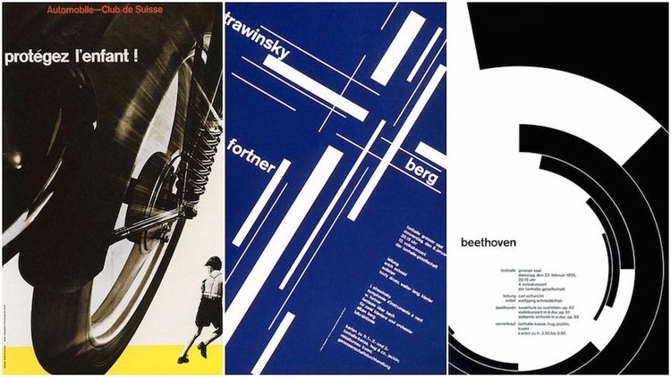
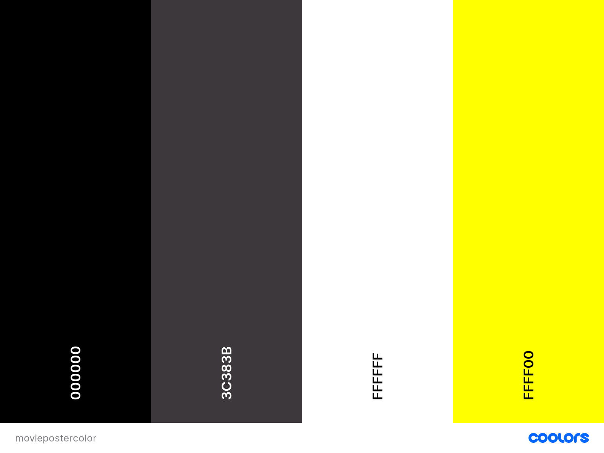
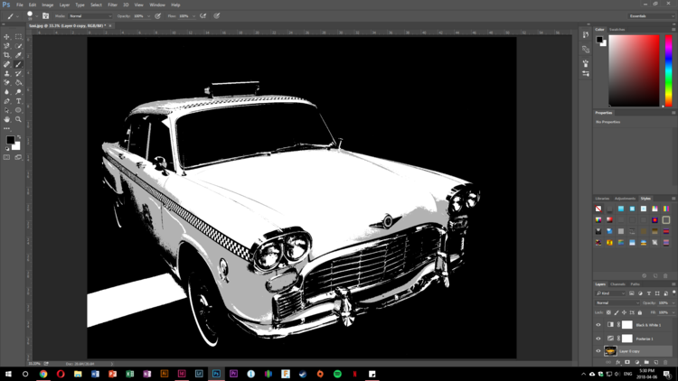

Project Analysis

Design Movement
My partner and I decided to pursue the designer - Joseph Müller-Brockmann in the Swiss/International Design Movement.
Joseph Müller-Brockmann design principle focuses on the core message, clean and clear visual and grid for text.
His work also represents a feeling of movement.

Color Selection
Color selection was a easy choice. The movie is about a taxi driver, thus we choose to use the primary color of yellow to represent the taxi.
With the black and white image of the taxi as the main focus, we also added leading lines to give the movie poster a sense of movement.
Font Selection
Joseph Müller-Brockmann mainly uses sans-serif fonts. Universe and Helvetica. So the fonts we chose was Open Sans for both headings and sub headings.

Image Selection
Using Adobe Photoshop, we deleted the background from the taxi, then we added a black & white filter along with posterized effect to give the overall image a vintage and further separate the layers of color.
Later, we used the brush tool to clean up the reflection and the white mark on the ground.